Comercial
Para empezar
La rutina de cada mañana
Objetivo: que ninguna paciente quede sin atender. Toma unos minutos, en el portal, pestaña Tareas.
- Confirmar citas: toca «Pedir confirmación» o «Enviar recordatorio». Se abre WhatsApp con el mensaje escrito.
- ¿Vino a su cita?: marca «Asistió» o «No asistió».
- Cobrar: toca «Enviar datos de pago». Cuando llegue la foto, marca «Pagó».
- Seguimiento → Le toca hoy: escribe a los pacientes en control.
Quién hace qué
Propuesta para confirmar en la capacitación.
| Quién | Dónde | Qué hace |
|---|---|---|
| Sheilla | Tareas, Calendario, Cobros, Kommo | Confirma citas, cobra, marca asistencia y responde chats |
| Ximena | Seguimiento | Escribe a los pacientes en control y registra su avance |
| Vanessa | Reportes, correo diario | Revisa los números, abre o bloquea horarios y decide |
Comercial
Test «Descubre tu plan»
Objetivo: atraer a quien aún no sabe qué necesita. Responde dos pasos y recibe una recomendación y la guía de recetas.
descubre.vanessatello.com.pe- Pon este link en tu biografía y en tus historias.
- La persona deja sus datos y responde.
- Al final ve su plan, abre la guía de recetas y puede reservar o escribir por WhatsApp.
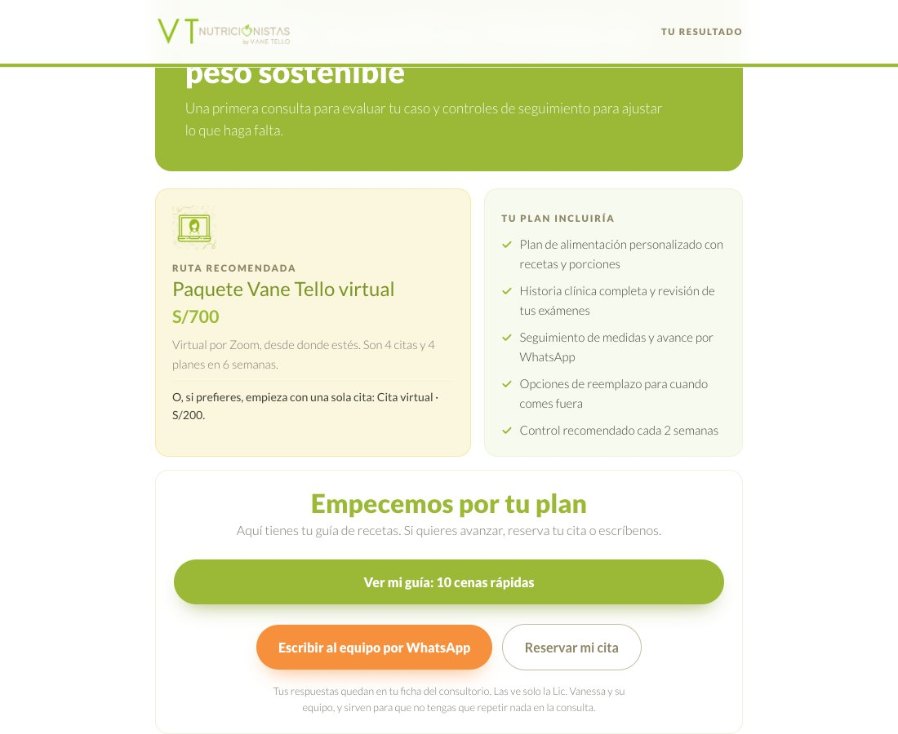
Reserva online
Objetivo: que la paciente elija su cita sin esperar a que le respondan.
descubre.vanessatello.com.pe/reservar.html- Elige con quién: la Lic. Vanessa o la nutricionista del equipo.
- Elige presencial (S/ 240) o virtual (S/ 200).
- Elige día y hora: solo se pueden tocar los que tienen espacio.
- Escribe sus datos, elige cómo pagar y toca «Reservar mi cita».
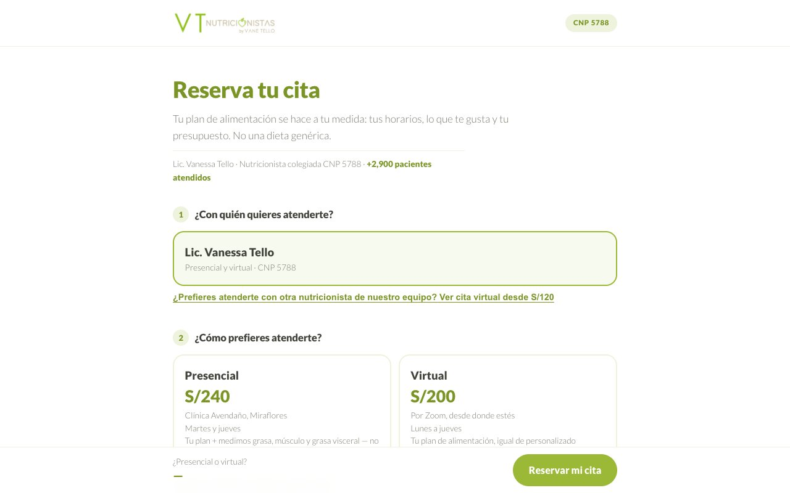
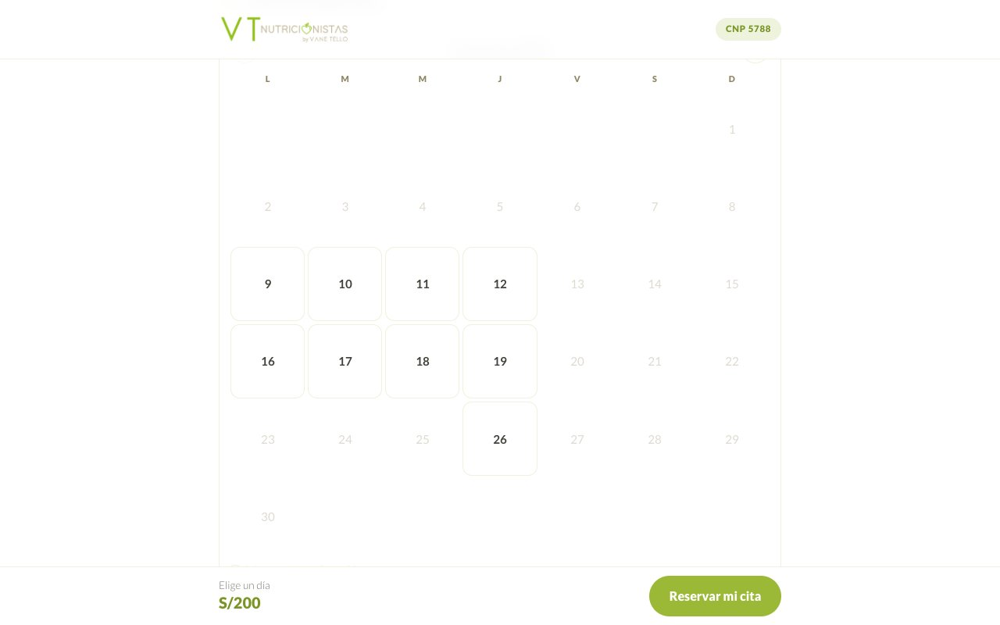
- Puede tardar hasta un minuto: no reservar dos veces.
- Si no paga en 48 horas, Sheilla puede liberar el horario.
Kommo
Objetivo: tener en un solo lugar las conversaciones de WhatsApp, Instagram, Facebook y TikTok, y los datos de cada persona.
vanetello.kommo.comLas tres partes que vas a usar
- Chats: para leer y responder las conversaciones.
- Leads: cada persona interesada es una tarjeta dentro de un embudo.
- Etiquetas: marcas en cada tarjeta para filtrar o dar una orden al bot.
Embudo Comercial VT
Dibujo con los nombres reales de tus etapas. El embudo Pacientes VT sigue a quienes ya se atienden.
Ver solo los mensajes de un número
Cada lead de WhatsApp lleva una etiqueta según el número por el que escribió. Se actualiza cada hora.
- Entra a Leads.
- Abre el filtro en la barra de búsqueda.
- En Etiquetas elige numero-api (914 791 486) o numero-sheilla (991 137 288).
Etiquetas útiles
| Etiqueta | Qué hace |
|---|---|
| numero-api / numero-sheilla | Dice por qué número escribió |
| sin-bot | El bot no le responde a esa persona |
| no-contactar | Pidió que no le escriban |
| juntado | El lead del test se unió con su chat de WhatsApp |
Link de WhatsApp para ManyChat
Objetivo: que un post o un anuncio lleve al chat del número API. Lo probamos: el mensaje entra a Kommo con la etiqueta numero-api.
La forma simple
wa.me/51914791486Copia este link y pégalo como botón en ManyChat. Abre el chat vacío. No hay que entrar a ningún panel.
Con un mensaje ya escrito
Este abre el chat con «Hola estoy interesado en sus servicios»: wa.me/message/PGZSJAUROL4IH1
Para crear otro con un texto distinto, desde la configuración de tu negocio en Meta:
- Configuración → WhatsApp accounts → elige el 914 791 486.
- Pestaña Messaging accounts → tres puntitos → administrar la cuenta.
- Phone numbers → toca tu número.
- Message links → Create Message Link → escribe el texto → copia el link.
Bot de redes
Objetivo: responder al instante los mensajes directos de Instagram, Facebook y TikTok.
- Responde solo mensajes directos. No responde comentarios ni historias.
- Usa tu texto y tus preguntas frecuentes.
- Si alguien del equipo está conversando con esa persona, no interrumpe.
- Dudas clínicas, pagos y reclamos no los responde: quedan para el equipo.
Asistente de WhatsApp · en prueba
Objetivo: que nadie se quede sin respuesta cuando Sheilla no está. Actuará en el 991 137 288 lunes, miércoles y viernes fuera de 9:30 a 11:30, martes y jueves fuera de 8 a 18, y fines de semana.
- Da precios de citas y paquetes, resuelve dudas con tus preguntas frecuentes y pasa el link de reserva.
- No confirma citas ni pagos, ni da números de cuenta: eso sigue con Sheilla.
- El programa integral y los casos delicados los deja para Sheilla.
Soy paciente bariátrica, tienen paquetes?
Claro! 💚 El paquete bariátrico incluye 5 citas (una al mes) y 5 planes: virtual S/ 870, semipresencial S/ 990 y presencial S/ 1,100. Si prefieres una cita suelta, es S/ 240 presencial o S/ 200 virtual. Aquí reservas: [link]
Cuánto sale el programa integral?
Sheilla te cuenta el detalle del programa apenas retome su horario 💚
Respuestas reales de una prueba por WhatsApp.
Cómo probarlo
Probar el asistente- Entra con la clave del equipo.
- Escríbele como lo haría una paciente.
- Anota el número de lo que cambiarías y nos lo pasas.
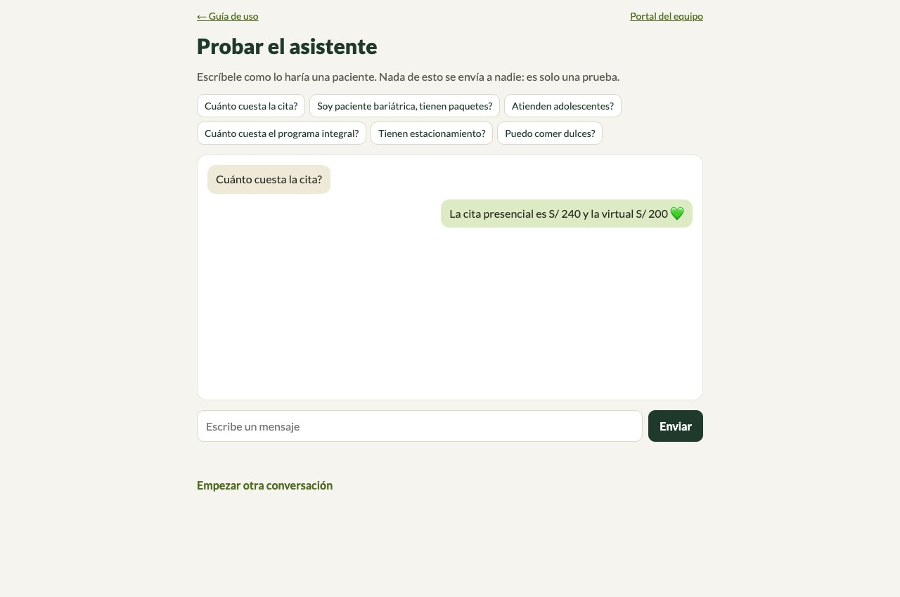
Mensajes de seguimiento · en prueba
Objetivo: volver a escribir a quien recibió el link por redes y no siguió.
- Primer mensaje a las 3 horas y segundo a las 20 horas.
- El tercero solo si la persona vuelve a escribir: Meta permite escribir hasta 24 horas después de su último mensaje.
- Se detiene si responde, si tiene cita o si la atiende el equipo.
Administrativo
Portal del equipo
Objetivo: manejar el día a día de citas, cobros y seguimiento en un solo lugar.
portal.vanessatello.com.pe/equipo.htmlEntra con la clave del equipo y elige tu cargo. Para practicar, usa el modo práctica: nada se guarda. Las capturas son de ese modo, con pacientes inventados.
Tareas
Lo que toca hacer hoy. Elige una lista, toca el botón, y la paciente sale de la lista.
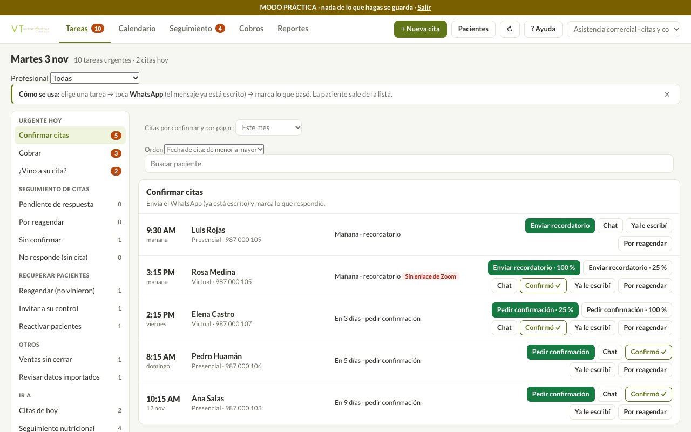
¿Vino a su cita?
Son citas confirmadas que ya pasaron y nadie marcó. Si no se marcan, los reportes y el seguimiento quedan incompletos. Quien no vino pasa a «Reagendar (no vinieron)».
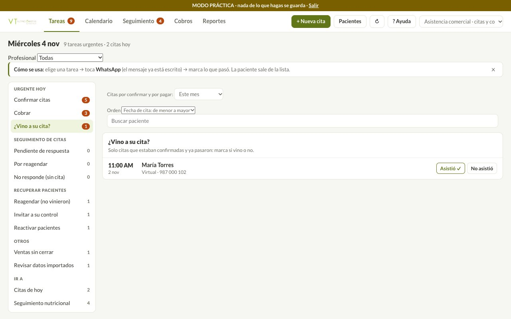
Calendario
La agenda por día, semana o mes. Con «Abrir horario» y «Bloquear agenda» manejas tu disponibilidad; lo que bloqueas deja de ofrecerse en la reserva online.
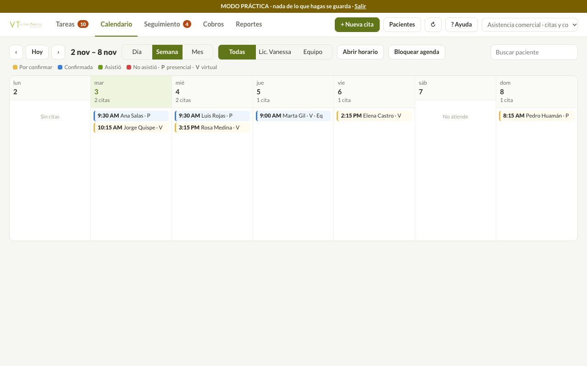
Nueva cita
Botón verde arriba. Busca a la paciente o crea una nueva, elige modalidad, fecha, hora y servicio, y guarda.
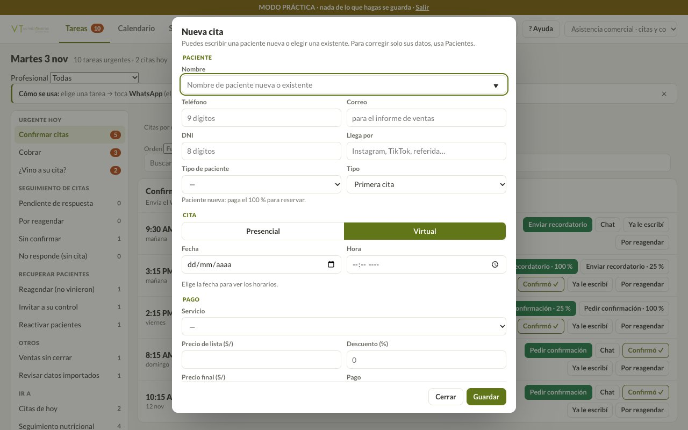
Seguimiento
Pacientes en control: a quién le toca hoy, los próximos 7 días y quién está en riesgo. Botones «Escribir / anotar» y «Agendar seguimiento».
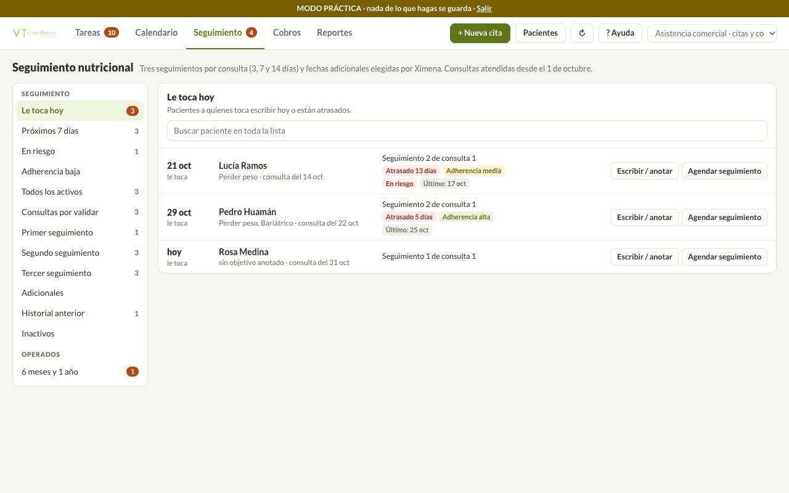
Cobros
Por cobrar, pagaron el 25 %, pagadas, clínicas por cobrar, paquetes, informe de ventas y conciliación de pagos.
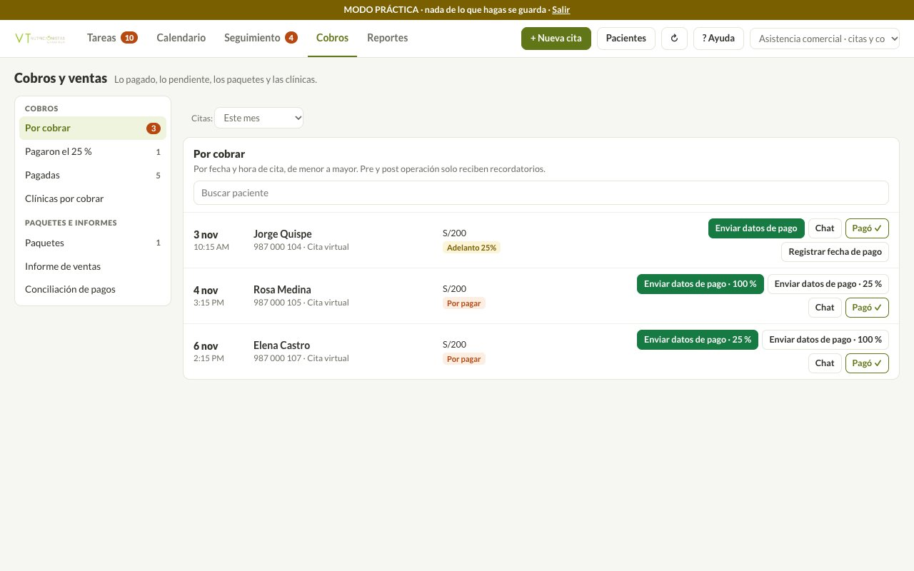
- «Falta el precio» o «Falta el teléfono»: abre la ficha, completa y guarda.
- No ves un cambio: toca el botón ↻.
- Clave incorrecta: pídela de nuevo a Vanessa.
Descargar el Excel
Objetivo: tener tu reporte de citas y ventas en Excel cuando lo necesites.
- Entra a Cobros → Informe de ventas.
- Filtra por fechas, pago, modalidad, profesional, estado o servicio. Los botones «Esta semana» y «Este mes» ayudan.
- Toca Descargar Excel.
- Abre el archivo con doble clic.
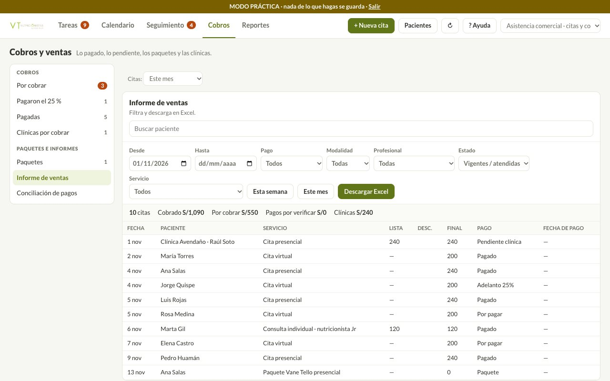
Tu reporte mensual, hoja por hoja
| Hoja de tu Excel | Dónde está ahora |
|---|---|
| Reporte de citas | Cobros → Informe de ventas → Descargar Excel |
| Resumen del mes | Pestaña Reportes |
| Citas Dr. Salazar - Ximena | En el Excel, filtra por «Llega por» y «Profesional» |
| Citas Avendaño y pre/post Avendaño | En el Excel, filtra por «Quién paga» o «Llega por». Falta el formato que pide la clínica (factura, diagnóstico, médico tratante). |
Reportes
Objetivo: ver cómo va el mes y decidir qué hacer, sin pedírselo a nadie.
portal.vanessatello.com.pe/informes.html- Abre la pestaña Reportes del portal, con la misma clave.
- Elige 7 días, 30 días o un mes.
- Lee de arriba abajo.
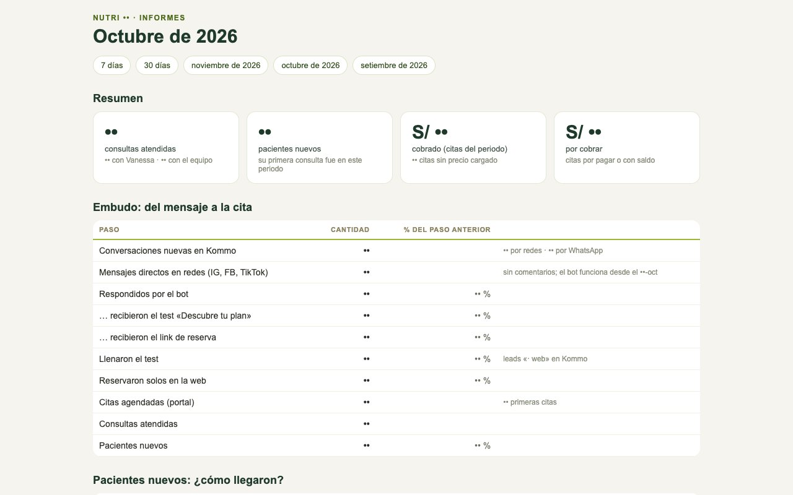
Los números están ocultos en esta guía.
| Si ves esto | Qué hacer |
|---|---|
| Muchas conversaciones, pocas respondidas | Revisar el correo de conversaciones sin responder |
| Muchos reciben el link, pocos lo llenan | Activar los mensajes de seguimiento |
| Muchas citas agendadas, pocas atendidas | Marcar «¿Vino a su cita?» y reagendar a quienes faltaron |
| Monto alto por cobrar | Tareas → Cobrar |
| Muchos pacientes «Sin dato» en cómo llegaron | Llenar «Llega por» en la ficha |
Correos automáticos
| Correo | Cuándo | Para qué |
|---|---|---|
| Reporte diario | 8:00 a. m. | Nuevos, citas del día y embudo |
| Conversaciones sin responder | 8:30 a. m. y 8:30 p. m. | Quién espera respuesta |
Plataforma de pacientes
Objetivo: que cada paciente vea su próxima cita y su seguimiento sin preguntarle a nadie.
portal.vanessatello.com.pe/cliente.html- Abre el link.
- Escribe su DNI, solo números.
- Toca «Ingresar a mi seguimiento».
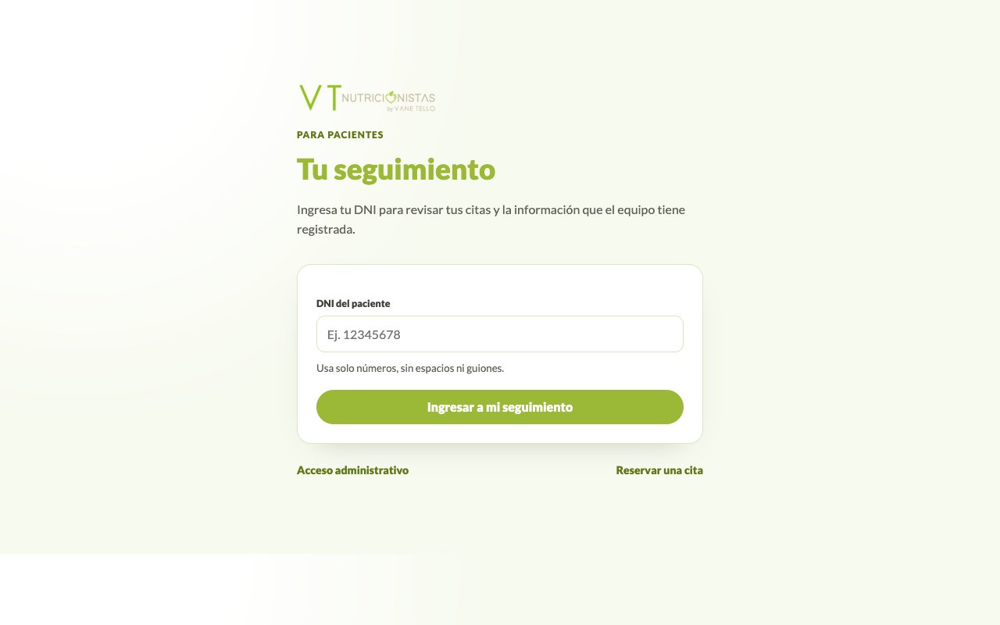
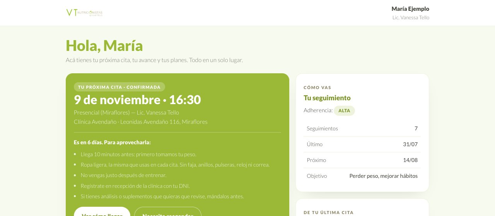
Ejemplo con una paciente inventada.
Qué está listo y qué sigue
| Qué | Estado | Siguiente paso |
|---|---|---|
| Portal, reportes y correos | Funcionando | Capacitación del viernes |
| Test y reserva online | Funcionando | Poner los links en historias y biografía |
| Plataforma de pacientes | Funcionando | Decidir si se muestra el peso con una clave |
| Bot de redes | Funcionando | Revisar sus respuestas cada semana |
| Juntar el test con el chat de WhatsApp | Funcionando | Ninguno |
| Filtrar en Kommo por número | Funcionando | Practicarlo en la capacitación |
| Asistente de WhatsApp | En prueba | Vanessa prueba y aprueba las respuestas |
| Mensajes de seguimiento | En prueba | Vanessa aprueba los 3 textos |
| Links en tu página web | Falta | Quien maneja tu web los coloca |
| Formato de reporte para Avendaño | Falta | Definir qué datos se registran |
| Calendario de Google y correos a pacientes | Falta | Respuesta de Sandro |
Todos tus links
| Para qué | Link |
|---|---|
| Portal del equipo | portal.vanessatello.com.pe/equipo.html |
| Reportes | portal.vanessatello.com.pe/informes.html |
| Probar el asistente | portal.vanessatello.com.pe/probar-asistente.html |
| Manual del portal | portal.vanessatello.com.pe/manual.html |
| Pacientes | portal.vanessatello.com.pe/cliente.html |
| Reservar cita | descubre.vanessatello.com.pe/reservar.html |
| Test Descubre | descubre.vanessatello.com.pe |
| Recetario | descubre.vanessatello.com.pe/recetas.html |
| WhatsApp número API | wa.me/51914791486 |
| Kommo | vanetello.kommo.com |